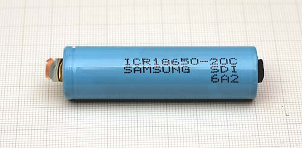
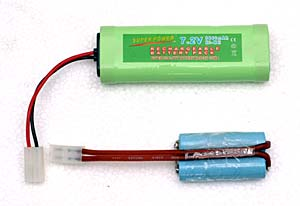
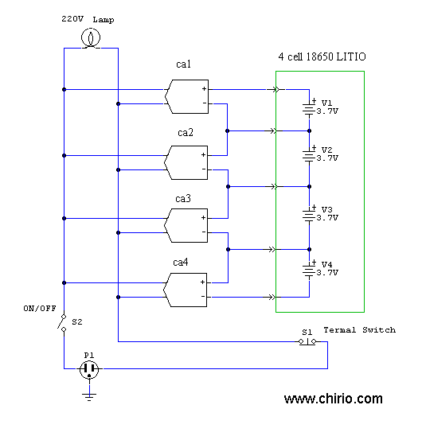

Batteries & energy
LIPO BATTERY CHARGER
Automatic balanced battery charger to safely charge 2,3,4 Lithium or LIPO cells "DIY" by Roberto Chirio
Page index
{kind=link}
Notebook battery composed of 8 lithium-ion elements 18650 3.7V 2200mAh. The elements are coupled two by two and then put in series forming a battery pack of 14.8V 4400mAh. Each battery pack must have a protection circuit, which has the task of signaling to the PC the battery charge condition and interrupting if they are critical for the battery; also the temperature sensor interrupts the output if the temperature becomes dangerous.
March 2009
Rechargeable Lithium batteries and the more recent and high-performance Lithium Polymer batteries, are replacing every other type of rechargeable battery.
Every mobile phone uses Lithium Ion batteries, therefore the technology has developed enormously, creating elements with reduced dimensions and high performance, and prices are also dropping.
Unfortunately with many good features, lithium batteries also have weak points....Certainly higher cost, then they suffer from deep discharge and during recharge you must not exceed 4.20V/cell at 25° otherwise they can heat up and even explode.
It is therefore necessary to have particular care during charging and use signaling devices to prevent complete discharge.

- Samsung lithium ion battery 2200mAh 3.7V type 18650.
- Diam. 18mm H 65mm
- It is characterized by a discharge capacity of 20C which means 44A as starting current, not bad for applications for RC model cars where high starting currents are required for Brushless motors.

Comparison between the RC battery of 3000mAh Ni-Mh and the one made using two lithium elements of 3,7V 2200mAh.
In practice NiMh no longer presents more than 2100mAh effective, while Lithium has proven to have almost 2200mAh effective, therefore the reduced size and good performance makes lithium winning for RC applications but also for all electronic system power supply needs with high performance.
For info contact: info@chirio.com
ELECTRICAL CIRCUIT DIAGRAM
{kind=link}
Circuit description
Power supply with 220V 50 Hz input via transformer T1. The transformer secondary must be sized based on how many cells you want to charge. For two cells a 12V output is sufficient, for 3-4 cells a secondary of 18-24V is necessary. The current draw is about 1.5A. A D2 diode bridge 2200mA 80V or greater rectifies the AC current and the C1 capacitor 4700uF has the task of smoothing. In the case of 4-cell configuration the capacitor must be 35-50V.
Button S1 serves to supply power. If the battery temperature conditions are below 30° the relay closes and supplies power to the charging circuit; if the battery is hot the system shuts down or is not powered, this is the first safety system for lithium-ion charging. Clearly the thermistor R12 must be positioned under the batteries being charged, or better yet inside the pack and connected to the charging connector.
The thermal protection circuit draws power from the output of the rectifier bridge and through the 7812 we obtain the 12V voltage needed to control the relay. During operation, RLY2 is normally closed. Trimmer R2 should be calibrated to open the relay at temperatures above 30-40° measured on the battery body.
The LM317 integrated circuit has the task of supplying the necessary voltage for charging the cells, it must be calibrated via R3 for 8.40V for 2 cells, 12.60V for 3 cells and 16.80V for 4 cells. The R6 serves to limit the charging current; in this case we run the LM317 at a current of 0.6A which allows charging 2200mA cells in 4 hours. To get maximum current, remove the R6 with a jumper, so you can run the LM317 at maximum current of 1.5A; the regulator must be mounted on a heatsink of at least 2°/W
The charge-limiting circuit, consisting of TL431 and BD190, has the task of limiting the charge voltage to 4.20V and must be carefully calibrated with R4, R5..... before connecting the battery under load. You must have a limiting circuit for each connected battery cell; therefore with 4 cells you must have 4 circuits in series on the output. The BD 190 must be mounted on a heatsink.
To calibrate the trimmers R4, R5 ... you must use an external laboratory power supply, set to 1.5A and 5V out. Each circuit is powered individually, and you adjust the trimmer to have exactly 4.20V, to be read after a few seconds, do not insist long with the power supply otherwise the transistor heats up too much.
When the batteries are charged, they begin to heat up, therefore the thermal sensor (R12) must be positioned under the battery pack. If the temperature exceeds the calibration threshold, the battery charger shuts off automatically. The 3A D3 diode prevents the battery voltage from returning inside the LM317, damaging it.
On the other hand the limiting circuits remain connected and consume some energy, the battery must be removed as soon as possible.
The most meticulous can add 1 small 12V relay for each battery element being charged, so as to isolate the batteries when they are charged, the relays should be connected in parallel with the main relay, and optionally reinforce the control using a Darlington transistor.
Simple alternative solution to charge Lithium-ion batteries

- This simple configuration allows obtaining nonetheless a good balanced charger for 4 Lipo cells.
- 4 (n) mobile phone chargers are used, also of the budget type, important, they must all be identical and have an open-circuit voltage of 4.20V, generally the charging current is 700mA, so 2200mAh cells will be charged in 3-4 hours.
- A Klixon thermal switch from 40-50° is necessary to be placed under the battery.
- All chargers must be positioned on a power strip with a switch, so as to turn them all on simultaneously.
Reference
- Samsung battery theory: http://www.samsungsdi.com/contents/en/tech/eneClass_01_01.html
- Theory of lithium batteries Wikipedia: - http://it.wikipedia.org/wiki/Accumulatore_litio-ione
for info contact: info@chirio.com
© Roberto Chirio: all rights reserved.